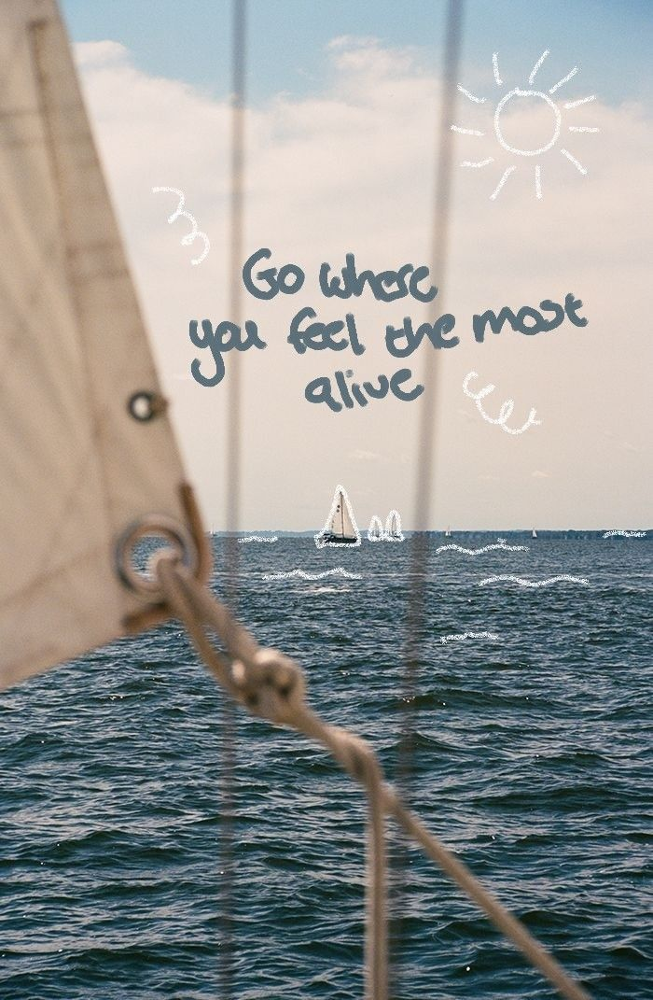
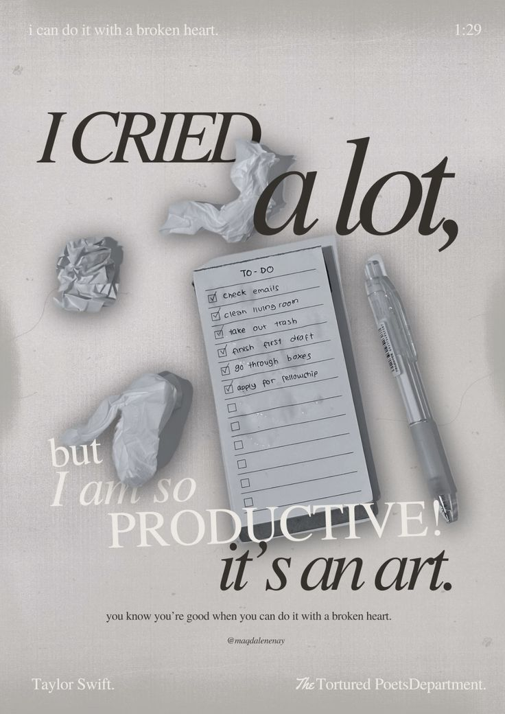
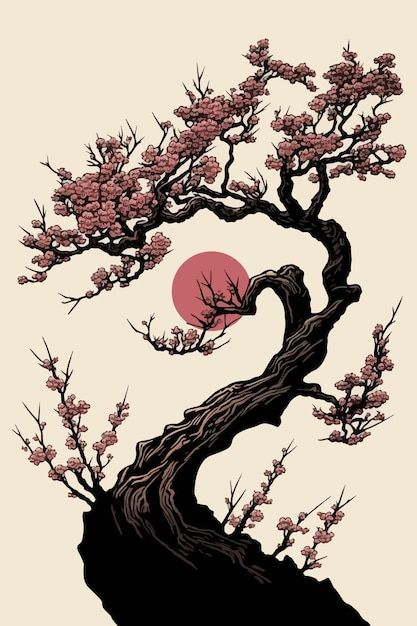

Ariane's Poems

Buntod Reef: The Place You'll Love To Be

The Silent Blade

Underneath the Blossom Tree: A Wish for Joyful Laughs

The Poet's Unwritten Verse
Ariane's Homereading Reports
Homereading Report 1
Homereading Report 2
Homereading Report 3
Homereading Report 4
Homereading Report 5
Homereading Report 6
Homereading Report 7
Ariane's Other Works
Speech
Article